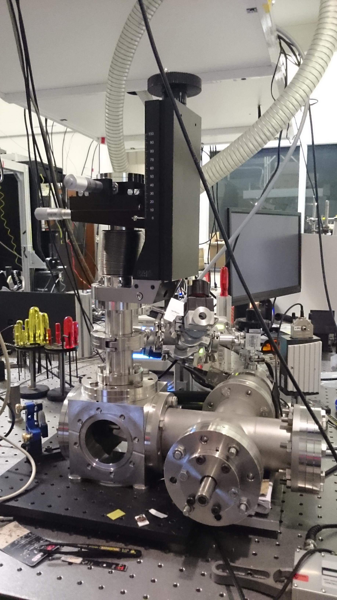
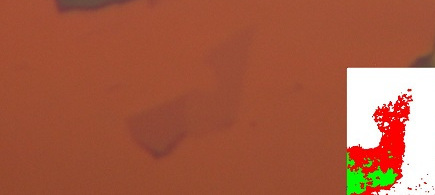
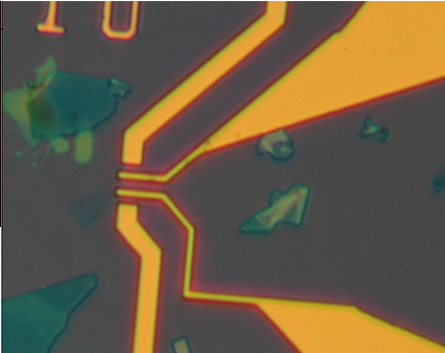
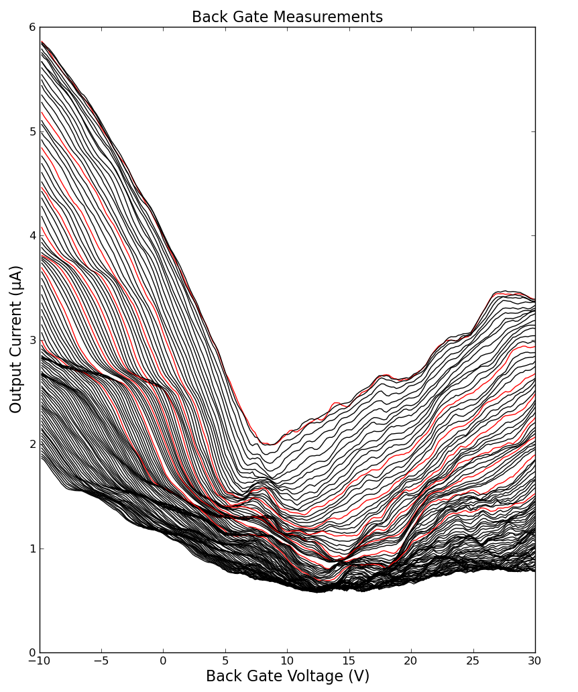
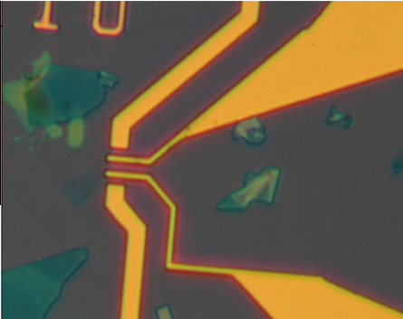
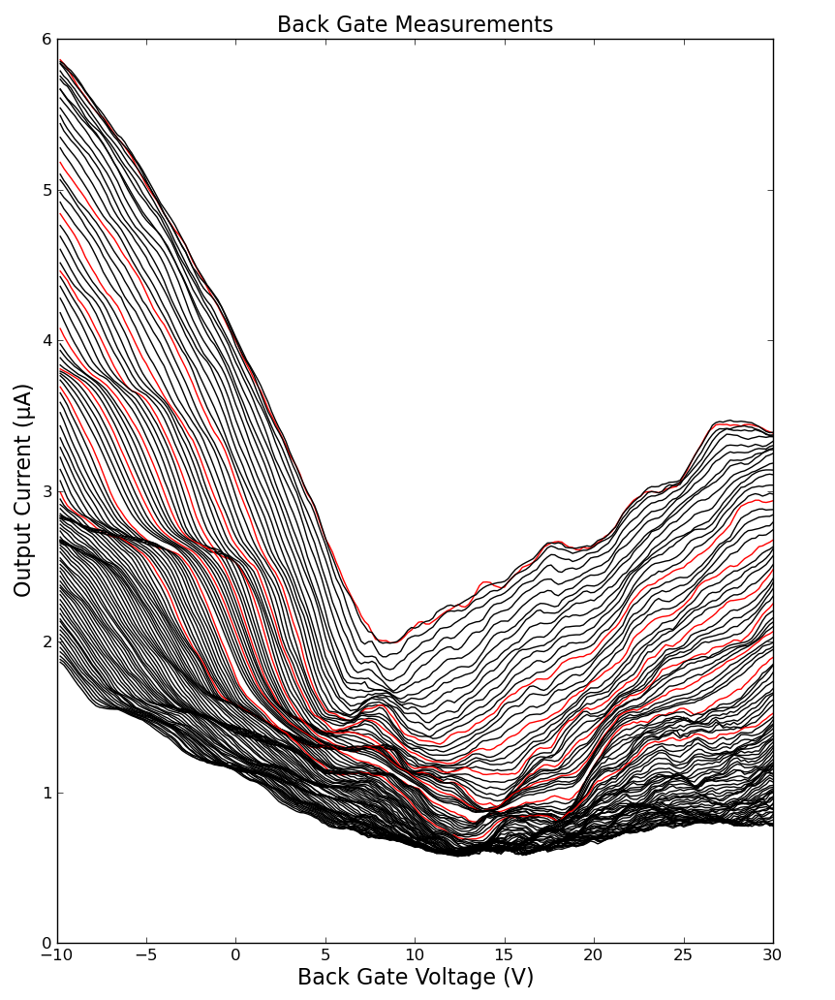

PhD Researcher
July 2013 to March 2017
Optomechanical sensors for detecting spin, gravitation effects, dark matter and dark energy. This involves trapping a nanoparticle, a sub-micro sphere of Silica, within the focus of a laser and observing how its motion changes in the presence of the test force. Averaging and data analysis techniques are used reduce the noise and push to reach the limits of the system. That system was modelled mathematically and numerically in Python using NumPy, SciPy, matplotlib. Complex analysis sometimes involved of the use of the University of Southampton's computational cluster (Iridis) which was does using PyMPI.

The use of levitated optomechanical systems as force sensors is a growing field with great potential. This thesis presents a system that achieves a sensitivity of ≈10-22 N / √Hz by using on-resonance forces and an optically levitated nanoparticle in a gradient force trap. It is possible to reach pressures of 10-6 mbar and trap particles with diameters of 50 nm to 300 nm. The particle's motion is detected with a homodyne-like detection system that measures the phase difference in the scattered and un-scattered, divergent, light. With this system it was possible to detect the changes in the particle's motion due to the application of an external AC and DC electric fields. DC electric fields showed a shift in the average position of up to 100 nm and also a shift of the relevant oscillator frequency of up to 1500 Hz. Applying an AC electric field resulted in the particle's motion being driven at the AC frequency. On resonance the detected signal increased by a factor of 200 which helps to measure smaller changes in the particle's motion compared to the undriven signal. Using the AC driving it was possible to detect a particle with a charge of just 4 ± 3 electrons.
MPHYS with a year in experimental research - First Class (HONS)
September 2008 to June 2013
Modules include: Python and computational modelling, Multivariable vector Calculus, Advanced Quantum Mechanics Special relativity: Lorentz boots and the Klein-Gorden equation Electromagnetism.
Final year was pure experimental research with the project title "Lambda levels in Graphene"
The aim of this project is to describe theoretically and demonstrate experimentally the formation of Landau Levels (LL). This report will first demonstrate the theoretical origins of LL in 2 dimensional solids (2DES) and Graphene while showing how the two differ from one another. Mathematical derivations will show that LL in Graphene show a linear dependence on the square root of magnetic field not seen in other 2DES. The report describes how the formation of Landau levels can be observed as changes in the electrical properties of the materials. The principle described in this report is the Shubnikov-de Haas effect (SdH) with work also done on the Quantum Hall effect. Simulations show that oscillations in resistance are seen as a function of backgate voltage in the ambipolar effect that exists in Graphene. They show that there is an increase in the effect with increasing magnetic field along with wavelength of the oscillations. These effects were clearly observed in experimental work performed using a superconducting magnet at temperatures of 4 K. The temperature dependence of the ambipolar effect is demonstrated along with the increase in resistance for decreasing temperature. The experimental work shows the formation of LL and the observation of the Shubnikov-de Haas effect. The second and third Landau levels are observed with the percentage change in fermi energy from one level to the next in agreement with an average of $63\pm10\%$ compared with the theoretical value of 57\%




